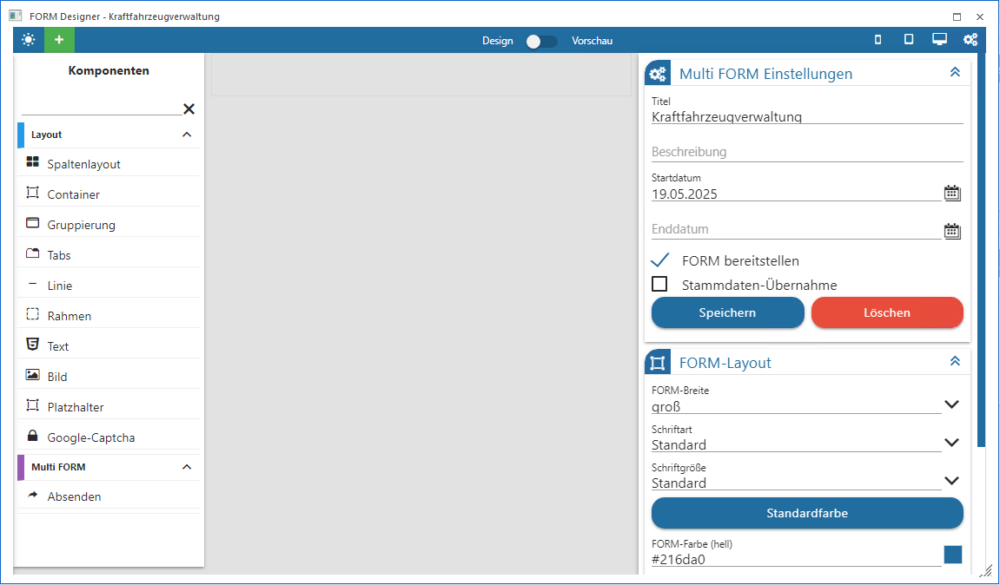
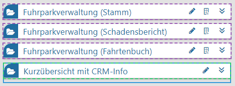
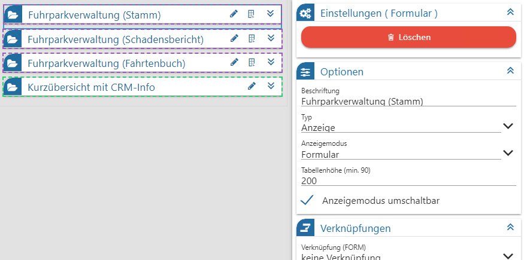

Ø Neuanlage einer Multi FORM
Aus dem Hauptmenü des FORM Designers wird die Option "neue FORM" selektiert. In Folge kann im linken Bereich "Multi FORM" ausgewählt werden.
Bevor die eigentliche Multi FORM bearbeitet werden kann, müssen im rechten Bereich der Multi FORM Einstellungen Grunddefinitionen hinterlegt und gespeichert werden.
Über das grün hervorgehobene weiße Plus-Symbol im oberen linken Bereich steht die Auswahl der gewünschten FORM (normales Formular bzw. individuelles Formular) zur Verfügung. Auf diesem Weg können mehrere FORMs nacheinander selektiert werden.

Damit in einer Multi FORM schnell erkennbar ist, um welchen Typ von Formular es sich handelt, werden die Formulare mit einer Farbe versehen
ü FORM-Formular lila gestrichelt umrandet
ü individuelle Formular grün gestrichelt umrandet

Wie jede enthaltene FORM besitzt auch die Multi FORM Eigenschaften, welche über das Zahnrad-Symbol oben rechts in der Applikation zu öffnen sind.
Ø Eigenschaften Multi FORM
Optionen
Ø Titel
Hier kann der Titel der Multi FORM eingegeben werden. Über diesen Titel kann die Multi FORM auch in weiterer Folge wieder aufgerufen werden. Der Titel der Multi FORM ist eindeutig und darf nicht mehrfach vergeben werden (das wird dann beim Speichern mit einer Fehlermeldung abgelehnt).
Ø Beschreibung
In diesem Feld kann eine erweiterte Beschreibung der Multi FORM hinterlegt werden.
Ø Startdatum / Enddatum
Als "Startdatum" wird das Tagesdatum vorgeschlagen, welches über das Kalendersymbol geändert werden kann. Das "Enddatum" kann in gleicher Weise hinterlegt werden. Damit kann die Gültigkeit der Multi FORM definiert werden. Sie wird im DataCenter auch nur angeboten, wenn das Startdatum in der Vergangenheit und das Enddatum in der Zukunft liegt.
Ø FORM bereitstellen
Standardmäßig ist die Option aktiviert und damit können alle berechtigten Personen auf das FORM zugreifen. Ist die Option deaktiviert, dann kann die Multi FORM nur vom Ersteller gesehen / bearbeitet werden. Erst mit Aktivieren der Option ist die Multi FORM dann für Berechtigte sichtbar.
Ø Stammdaten-Übernahme
Die Aktivierung dieser Eigenschaft ist eine Vorrausetzung dafür, dass die in einer Multi FORM enthaltenen Datensätze innerhalb der individuellen Stammdatenvorlage importiert werden können.
Die Einstellungen der Multi FORM sind via Button "Speichern" und "LÖSCHEN" zu speichern, bzw. die abgespeicherte Multi FORM kann gelöscht werden.
FORM-Layout
Im Bereich FORM-Layout können Einstellung bezüglich der Schriften und Farben Für die Formularauswahl "Formular", "Multi FORM" und "individuelles Formular" getätigt werden.
Ø FORM-Breite:
Es kann gewählt werden zwischen klein, mittel, groß und max. Breite
Ø Schriftart:
es wird Standard vorgeschlagen, über das Icon ist aus einer Liste mit diversen Schriftarten eine Änderung vorzunehmen
Ø Schriftgröße:
es wird Standard vorgeschlagen, über das Icon ist aus einer Liste mit diversen Schriftarten eine Änderung vorzunehmen
Ø FORM-Farbe:
aufgegliedert in Hell und Dunkel, anpassbar an das jeweils genutzte Grunddesign. Wird eine RGB-Farbnummer eingetragen, so wird diese automatisch in eine HEX-Farb-Nummer umgewandelt und ausgewiesen. Voreingestellt sind die jeweiligen WinLine Grundfarben.
Ø Hintergrundfarbe:
Die hier gewählte Farbe, gegliedert in Hell und Dunkel (anpassbar an das jeweils gewählte Grunddesign) kommt bei allem, beim Grundelement ist zum Einsatz. Wird eine RGB-Farbnummer eingetragen, so wird diese automatisch in eine HEX-Farb-Nummer umgewandelt und ausgewiesen.
MesoCloud
Sobald eine FORM oder Multi FORM erfolgreich gespeichert wurde, sind in diesem Bereich die Speicherinformationen für welchen Mandanten, an welchem Tag, Monat, Jahr und Uhrzeit und unter welchem Namen zu entnehmen. Diese Einstellung ist für "Formular" und "Multi FORM" möglich.
Die in einer Multi FORM möglichen Inhalte, also FORM oder individuelles Formular, haben eigene Einstellungen.
Ø Einstellungen (Formular)
In der Multi FORM enthaltene FORMs sind einzeln selektierbar. Folgend aufgeführte Optionen können nach dem Setzen des Fokus im Definitionsbereich bearbeitet werden:

Optionen
Ø Beschriftung
Es kann eine Beschriftung für das Formular hinterlegt werden.
Ø Typ
ü Anzeige: es kann keine Eingabe vorgenommen werden
ü Editieren: bereits vorhandene Erfassungen können überschrieben werden
ü Neuanlage (inkl. Editieren): es können neue Einträge erfasst und editiert werden
Ø Anzeigemodus
Es kann gewählt werden zwischen
ü Formular
ü Tabelle (reine Anzeige)
Ø Anzeigemodus umschaltbar
Wird diese Checkbox aktiviert, so kann im DataCenter der Anzeigemodus gewechselt werden, es stehen beide Varianten zur Verfügung.
Ø Tabellenspalten bearbeiten
Welche Tabellenspalten in der Bearbeitungsmaske vorhanden sein sollen, wird über die Tabelle entschieden. Alle Elemente stehen auf der rechten Seite zu Verfügung. Über den Button "Alle Spalten entfernen" werden sie auf die Seite der Datenfelder gelegt und können einzeln nach recht gezogen werden.
Verknüpfungen
Wie die einzelnen FORMs und / oder individuelle Formulare miteinander verknüpft sind, kann in dem Bereich "Verknüpfungen" festgelegt werden
Ø Verknüpfung (FORM)
Mit welcher FORM soll, die FORM verknüpft werden, in deren Einstellungen ich stehe.
Ø Verknüpfung von Feld
Hier ist das Feld gemeint aus der FORM, in welcher ich mich befinde.
Ø Verknüpfung zu Feld
Ein Feld aus der FORM aus der Schlüsselung "Verknüpfung (FORM)".
Ø Beziehung
An dieser Stelle wird die Art der Beziehung hinterlegt. Handel es sich um eine einmalige Beziehung, so muss "1:1" angegeben werden und bei mehrfacher Beziehungsmöglichkeit die Variante "1:N".
Ø Einstellungen (Individuelles Formular)
Optionen
Ø Beschriftung
Es kann eine Beschriftung für das Formular hinterlegt werden.
Ø Typ
ü Anzeige: es kann keine Eingabe vorgenommen werden
ü Editieren: bereits vorhandene Erfassungen können überschrieben werden
ü Neuanlage (inkl. Editieren): es können neue Einträge erfasst und editiert werden
Ø Tabellenspalten bearbeiten
Welche Tabellenspalten in der Bearbeitungsmaske vorhanden sein sollen, wird über die Tabelle entschieden. Alle Elemente stehen auf der rechten Seite zu Verfügung. Über den Button "Alle Spalten entfernen" werden sie auf die Seite der Datenfelder gelegt und können einzeln nach recht gezogen werden.
Verknüpfungen
Wie die einzelnen FORMs und / oder individuelle Formulare miteinander verknüpft sind, kann in dem Bereich "Verknüpfungen" festgelegt werden.
Ø Verknüpfung (FORM)
Mit welcher FORM soll, die FORM verknüpft werden, in deren Einstellungen ich stehe.
Ø Verknüpfung von Feld
Hier ist das Feld gemeint aus der FORM, in welcher ich mich befinde.
Ø Verknüpfung zu Feld
Ein Feld aus der FORM aus der Schlüsselung "Verknüpfung (FORM)".
Ø Beziehung
An dieser Stelle wird die Art der Beziehung hinterlegt. Handel es sich um eine einmalige Beziehung, so muss "1:1" angegeben werden und bei mehrfacher Beziehungsmöglichkeit die Variante "1:N".